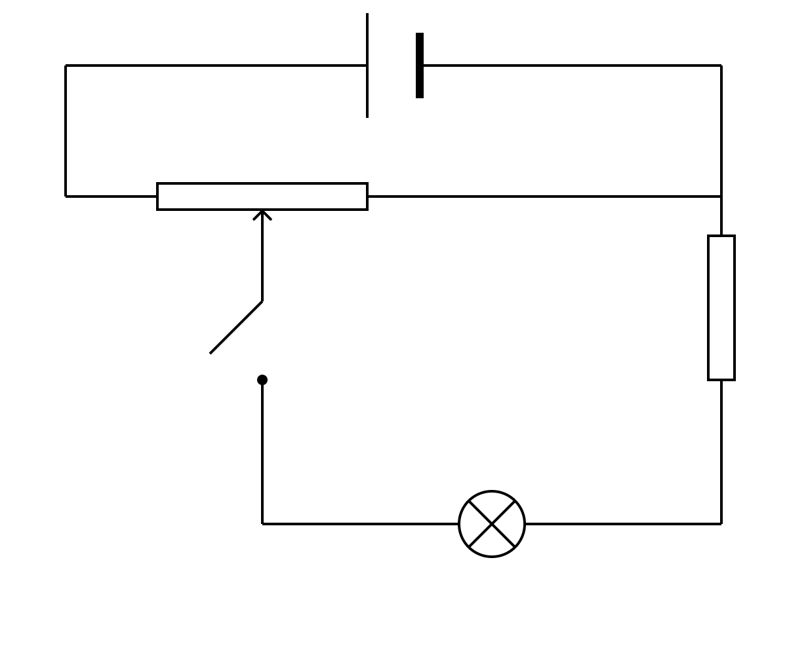
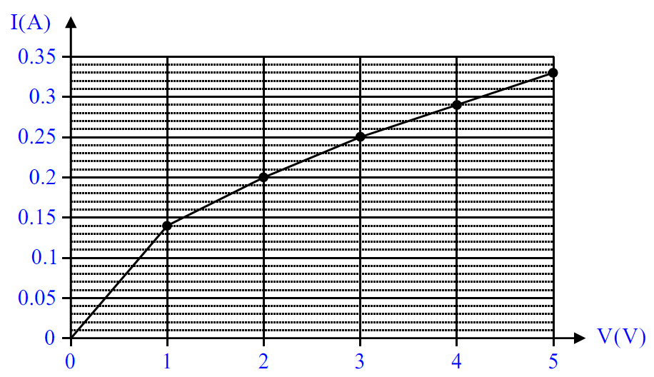
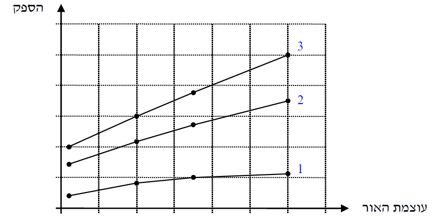

שאלה 3

תלמידה ערכה ניסוי לבדיקת התלות שבין עוצמת הזרם בנורת להט ובין המתח על הנורה.
לשם כך היא הרכיבה מעגל הכולל מקור מתח, נורה, נגד קבוע, נגד משתנה, מפסק ותיילי חיבור שהתנגדותם זניחה (ראה תרשים 1).
התלמידה ערכה מדידות אחדות בעזרת מכשירי מדידה אידיאליים. את תוצאות המדידות היא הציגה בגרף מקורב, המתאר את הקשר בין שני המשתנים (הזרם והמתח).
העתיקו את תרשים 1 למחברתכם. הוסיפו לתרשים המעגל שבמחברתכם מד-מתח ומד-זרם אידיאליים, שימדדו את המתח על הנורה ואת עוצמת הזרם העובר דרכה. (8 נקודות)

בתרשים 2 שלפניכם מוצג הגרף ששרטטה התלמידה.
על פי הגרף:
חשבו את התנגדות הנורה בכל אחד משני תחומי המתח:
0 < V < 1V
3V < V < 5V
(8 נקודות)
חשבו את הספק הנורה עבור כל אחד משני המתחים:
V = 1V
V = 5V
(8 נקודות)
נתונה כמות האנרגיה המתבזבזת בנורה (בעיקר על חום) במשך שנייה אחת:
כאשר V = 1VE = 0.132 J
כאשר V = 5VE = 1.52 J
חשבו את נצילות הנורה עבור שני ערכי המתח (1)-(2). (6 נקודות)

נורות להט מוחלפות כיום בנורות מסוגים אחרים (כגון נורות LED או נורות PL) בעיקר בשל הנצילות הנמוכה מאוד של נורות להט. בתרשים 3 שלפניכם מוצגים ההספקים של נורת PL, נורת להט ונורת LED, כפונקציה של עוצמת האור שהן מפיקות.
קבעו איזה מן הגרפים, 1, 2 או 3, מתאר נורת להט. נמקו את קביעתכם. (1.33 נקודות)